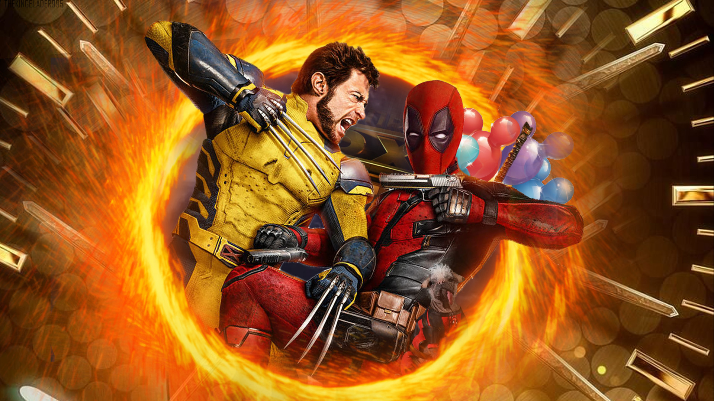

Deadpool & Wolverine (2024)

Sinopse
Deadpool & Wolverine (2024) reúne pela primeira vez os dois anti-heróis mais icônicos da Marvel em um filme solo. Após eventos caóticos no multiverso, Wade Wilson cruza o caminho de um Wolverine amargurado e fora de seu tempo. Juntos (e se odiando), eles precisam impedir uma ameaça que coloca em risco toda a linha do tempo.
Direção e Elenco Principal
- Diretor: Shawn Levy
- Elenco: Ryan Reynolds, Hugh Jackman, Emma Corrin, Morena Baccarin, Jennifer Garner
Informações Técnicas
- Gênero: Ação, Comédia, Super-herói
- Duração: 2h 08min
- Estreia: 25 de julho de 2024
- Classificação Indicativa: 18 anos
Curiosidades
- O filme marca o retorno oficial de Hugh Jackman como Wolverine após Logan (2017).
- Deadpool & Wolverine integra oficialmente o MCU (Universo Cinematográfico Marvel).
- O roteiro inclui várias piadas metalinguísticas e referências a filmes anteriores da franquia X-Men.
Recepção da Crítica
O filme foi aclamado pelo público e elogiado pela crítica por equilibrar humor ácido, violência gráfica e emoção. Especialistas destacaram a química entre Reynolds e Jackman, além da ousadia criativa ao explorar o multiverso de maneira divertida e sem medo de quebrar regras.
Produção e Estilo
Com direção segura de Shawn Levy, o filme aposta em cenas de ação criativas, trilha sonora nostálgica e visuais que homenageiam os quadrinhos da Marvel. O tom irreverente e satírico permanece como marca registrada de Deadpool, agora em escala multiversal.
Expectativas Futuras
“Deadpool & Wolverine” abre caminho para novas interações no MCU, incluindo aparições futuras em Vingadores: Guerras Secretas. A recepção positiva torna provável a continuação dessa improvável — e hilária — dupla.